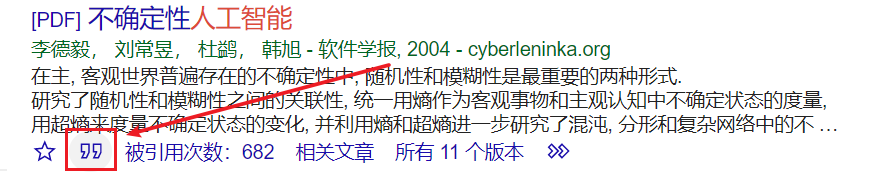
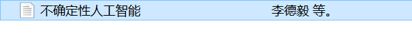
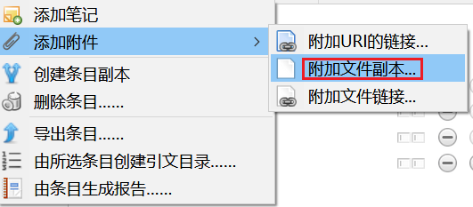
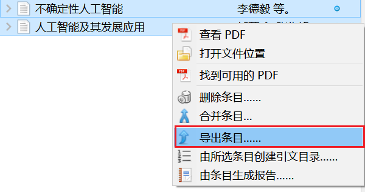
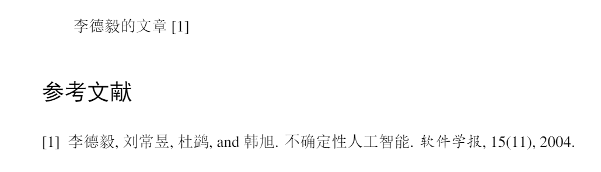

本文最后更新于：2020年7月1日 下午
1. Latex框架和总体设置
1.1 框架
\documentclass[UTF8,a4paper,12pt]{ctexart}
\title{LaTeX入门教程}
\date{} %不显示时间
\begin{document}
\maketitle
中文内容
\end{document}
1.2 标题 section
1.2.1 一级标题
\section{一级标题} % 有序号
\section*{一级标题} % 无序号
1.2.2 二级标题
\subsection{二级标题} % 有序号
\subsection*{二级标题} % 无序号
1.2.3 标题label
\section{System} % 章节标题
\label{sec:system} %标题的标签
\ref{sec:conclusions} %在正文中引用这个标题名
1.3 标题形式
% 章节序号 和 序号字体大小
\renewcommand{\thesection}{{\zihao{4} \chinese{section}.}} % 一.
\renewcommand{\thesubsection}{{\zihao{-4}\arabic{section}.\arabic{subsection}}} % 1.1
\arabic (1, 2, 3, ...)
\alph (a, b, c, ...)
\Alph (A, B, C, ...)
\roman (i, ii, iii, ...)
\Roman (I, II, III, ...)
\chinese (一，二，三，四，...)
1.4 字体字号
{\songti 你好} % 宋体
{\heiti 你好} % 黑体
\textbf{你好} % 加粗
{\zihao{4} 你好} % 四号字体
{\zihao{-4} 你好} % 小四号字体
1.5 行距
在导言部分
% 行距，单倍行距
\usepackage{setspace}
\setstretch{1}
1：单倍行距
1.2：1.5倍行距
1.6：2倍行距
或者
\linespread{1}
1：单倍行距
1.2：1.5倍行距
1.6：2倍行距
1.6 页眉页脚
% 页眉页脚
\usepackage{fancyhdr}
\pagestyle{fancy}
\fancyhf{}
\cfoot{\thepage} % 页脚居中写页码
\fancyhead[R]{\textbf{参赛队号 $\#\,6794$}} % 页脚写队名
1.7 图表公式的编号形式
% 图、表、公式的编号
\renewcommand{\thefigure}{\arabic{section}-\arabic{figure}} # 5-1
\renewcommand{\thetable}{\arabic{section}-\arabic{table}} # 5-1
\renewcommand{\theequation}{\arabic{section}-\arabic{equation}} # 5-1
% 单独一个图的引用
如图 \ref{Fig:character}所示 % 如图5-1所示
% 对多个图中的字图的引用
如图 \arabic{section}-\ref{Fig:character:a}所示 % 如图5-1(a)所示
1.8 字体
\textbf{字体} % 粗体
\textit{字体} % 斜体
\emph{重点} % 强调
1.9 颜色
\definecolor{Red}{RGB}{225,0,0}
\definecolor{Green}{RGB}{0,225,0}
\definecolor{Blue}{RGB}{0,0,225}
\textcolor{Red}{text}
\textcolor{Green}{text}
\textcolor{Blue}{text}
1.10 空格
\quad
\qquad
\,
\ (空格)
\/
2. 插入图片
2.1 单个图片
% 添加包
% figure 1
\usepackage{graphicx}
\usepackage{float}
% 需要添加图片的地方
\begin{figure}[H] % 此处需要用到宏包 float
\centering % 图片居中
\includegraphics[width = 8.3cm]{figures/figure_1.png}
\caption{The caption of this figure.}
\label{fig:figure1label}
\end{figure}
% 在中文中需要引用图片的地方
如图 \ref{fig:figure1label} 所示
2.2 两个图片并列
2.2.1 两个并排图片，单独标题
% 使用的宏包
\begin{minipage}[t]{0.5\linewidth}
\end{minipage}
\begin{figure}[H]
\begin{minipage}[t]{0.5\linewidth}
\centering
\includegraphics[width=6cm]{figures/butterfly.jpg}
\caption{left}
\label{Fig:left}
\end{minipage}
\begin{minipage}[t]{0.5\linewidth}
\centering
\includegraphics[width=6cm]{figures/butterfly.jpg}
\caption{right}
\label{Fig:right}
\end{minipage}
\end{figure}
2.2.2 两个并排图片，单独小标题，共享大标题
% 使用宏包
\subfigure[小标题]{}
% 添加红包 \usepackage{subfigure}
\begin{figure}[H]
\subfigure[left]{
\begin{minipage}[t]{0.5\linewidth}
\centering
\includegraphics[width=6cm]{figures/butterfly.jpg}
\label{Fig:left}
\end{minipage}
}
\subfigure[right]{
\begin{minipage}[t]{0.5\linewidth}
\centering
\includegraphics[width=6cm]{figures/butterfly.jpg}
\label{Fig:right}
\end{minipage}
}
\caption{G1 after first step of algorithm.}
\end{figure}
3. 插入表格
3.1 生成表格
\usepackage{booktabs} % 绘制三线表
\begin{table}[htp]
\centering
\caption{常用符号说明}
\begin{tabular*}{\textwidth}{@{\extracolsep{\fill}}ll}%表格两边顶格
\toprule
符号 & 说明 \\
\midrule
$s(x)$ & 径向基函数 \\
$I_1,I_2$ & 不同纹理特征的图像\\
\bottomrule
\end{tabular*}
\label{tab:symbol}
\end{table}
- latex表格生成网站:http://www.tablesgenerator.com/
- excel转latex:https://tableconvert.com/
3.2 表格引用
如表格 \ref{tab:DH}所示。
4. 数学公式
4.0 包
\usepackage{amsmath}
\usepackage{bm} % 数学公式中使用的黑体 \bm{R}
4.1 单个方程
\begin{equation}
y = ax+b
\end{equation}
4.2 方程组
% 左大括号
\begin{equation}
\begin{cases}
y_1 = a_1x + b_1\\
y_2 = a_2x + b_2
\end{cases}
\end{equation}
% 两个方程是一组(使用1个编号)，没有左大括号
\begin{equation}
\begin{gathered}
y_1 = a_1x + b_1\\
y_2 = a_2x + b_2
\end{gathered}
\end{equation}
% 两个方程是一组(使用1个编号)，有左大括号
\begin{equation}
\left \{
\begin{gathered}
y_1 = a_1x + b_1\\
y_2 = a_2x + b_2
\end{gathered}
\right .
\end{equation}
4.3 拆分单个公式
% 将一个长的公式分两行写
\begin{equation}
\begin{split}
y =& a + b + c\\
& + d + e
\end{split}
\end{equation}
4.4 分段函数
\begin{equation}
T=
\begin{cases}
0 & a<2\\
1 & a=2\\
3 & a>2
\end{cases}
\end{equation}
4.5 矩阵
\begin{equation}
\begin{bmatrix}
a & b\\
c & d
\end{bmatrix}
\end{equation}
4.6 分子分母
\begin{equation}
\frac{a+b}{c+d}
\end{equation}
4.7 希腊字母
% 小写希腊字母(大写希腊字母时，首字母大写即可)
\alpha
\beta
\gamma
\delta
\epsilon
\eta
\theta
\lambda
\mu
\sigma
\tau
\phi
\varphi
\chi
\psi
\omega
4.8 数学算子
\sum % 求和
\prod % 乘积
\partial % 微分
\int % 积分
\iint % 二级积分
\iiint % 三级积分
5. 一些符号
5.1 度
90^{\circ}
5.2 角
\angle A = 90^{\circ}
5.3 单引号，双引号
'单引号'\\
''双引号''
5.4 横杠
- \\ % 连字符
-- \\ % 数字范围
--- \\ % 破折号
5.5 下划线
\underline{论文} % 单下划线
\uuline{论文} % 双下划线
6. 列表
6.1 列表
% 列表里面嵌套列表
\begin{enumerate}
\item [1.] 大学
\begin{enumerate}
\item [1.1] 大一
\item [1.2] 大二
\item [1.3] 大三
\item [1.4] 大四
\end{enumerate}
\item [2.] 研究生
\end{enumerate}
7. 插入代码
7.1 包
\usepackage{listings} % 插入代码的包
\usepackage{xcolor} %颜色包
\lstset{ %
language=Matlab, % the language of the code
basicstyle=\zihao{-4}, % the size of the fonts that are used for the code
numbers=left, % where to put the line-numbers
numberstyle=\tiny\color{gray}, % the style that is used for the line-numbers
stepnumber=1, % the step between two line-numbers. If it is 1, each line will be numbered
numbersep=5pt, % how far the line-numbers are from the code
backgroundcolor=\color{white}, % choose the background color. You must add \usepackage{color}
showspaces=false, % show spaces adding particular underscores
showstringspaces=false, % underline spaces within strings
showtabs=false, % show tabs within strings adding particular underscores
frame=single, % adds a frame around the code
rulecolor=\color{black}, % if not set, the frame-color may be changed on line-breaks within not-black text (e.g. commens (green here))
tabsize=2, % sets default tabsize to 2 spaces
captionpos=b, % sets the caption-position to bottom
breaklines=true, % sets automatic line breaking
breakatwhitespace=false, % sets if automatic breaks should only happen at whitespace
title=\lstname, % show the filename of files included with \lstinputlisting;
% also try caption instead of title
keywordstyle=\color{blackred}, % keyword style
commentstyle=\color{dkgreen}, % comment style
stringstyle=\color{MidnightBlue}, % string literal style
escapeinside={\%*}{*)}, % if you want to add LaTeX within your code
morekeywords={*,...}, % if you want to add more keywords to the set
escapechar=`, % 中文注释
columns=flexible % 非等款输出
}
7.2 代码
% 先定义颜色
\definecolor{dkgreen}{rgb}{0,0.6,0}
\definecolor{gray}{rgb}{0.5,0.5,0.5}
\definecolor{MidnightBlue}{RGB}{25,25,112}
\definecolor{blackred}{RGB}{199,21,133} % 关键字颜色
% 代码
\begin{lstlisting}[language = Matlab]
function [W, Z, mu, mse] = pcaEm(X, m)
% Perform EM-like algorithm for PCA (by Sam Roweis).
% Input:
% X: d x n data matrix
% m: dimension of target space
% Output:
% W: d x m weight matrix
% Z: m x n projected data matrix
% mu: d x 1 mean vector
% mse: mean square error
% Reference:
% Pattern Recognition and Machine Learning by Christopher M. Bishop
% EM algorithms for PCA and SPCA by Sam Roweis
% Written by Mo Chen (sth4nth@gmail.com).
d = size(X,1);
mu = mean(X,2);
X = bsxfun(@minus,X,mu);
W = rand(d,m);
tol = 1e-6;
mse = inf;
maxIter = 200;
for iter = 1:maxIter
Z = (W'*W)\(W'*X); % 12.58
W = (X*Z')/(Z*Z'); % 12.59
%...
\end{lstlisting}
8. 文献引用
8.1 文献的下载
谷歌学术上下载文献后,点击如下图标:

得到如下文本:
@article{李德毅2004不确定性人工智能,
title={不确定性人工智能},
author={李德毅 and 刘常昱 and 杜鹢 and 韩旭},
journal={软件学报},
volume={15},
number={11},
year={2004}
}
复制到剪切板,打开zotero,文件=>从剪切板导入:

右键该条目,添加附件=>附加文件副本,可以将文件添加入内:

当有多条的时候,将需要的选中,然后右键导出条目.可以将所有选中条目导出为bibtex(.bib)文件:

8.2 bibtex文件的使用
latex文件使用cite包:
\usepackage{cite}
文档的结尾使用这两句话:
\bibliographystyle{plain}
\bibliography{ref}
其中ref是bibtex文件的名字(此代码处为ref.bib)
当上面的文章需要使用bibtex中的文件,使用:
\cite{__2004}
其中”__2004”是你要引用的条目的第一句话,例如本ref.bib文件如下:
@article{__2004,
title = {不确定性人工智能},
volume = {15},
number = {11},
journal = {软件学报},
author = {{李德毅} and {刘常昱} and {杜鹢} and {韩旭}},
year = {2004},
file = {李德毅 等。 - 2004 - 不确定性人工智能.pdf:C\:\\Users\\25648\\Zotero\\storage\\TV4IWQII\\李德毅 等。 - 2004 - 不确定性人工智能.pdf:application/pdf}
}
@article{__2012,
title = {人工智能及其发展应用},
volume = {12},
number = {2},
journal = {信息网络安全},
author = {{邹蕾} and {张先锋}},
year = {2012},
pages = {0--0},
file = {邹蕾 和 张先锋 - 2012 - 人工智能及其发展应用.pdf:C\:\\Users\\25648\\Zotero\\storage\\3U4NZ6YF\\邹蕾 和 张先锋 - 2012 - 人工智能及其发展应用.pdf:application/pdf}
}
所以”__2004”显示后就是如下效果:
代码部分:
李德毅的文章\cite{__2004}
\bibliographystyle{plain}
\bibliography{ref}
效果:

注意,在没有前文引用的情况下,文献是不会显示的,如上面的<<人工智能及其发展应用>>没有被引用所以没有对应的条目.
本博客所有文章除特别声明外，均采用 CC BY-SA 4.0 协议 ，转载请注明出处！